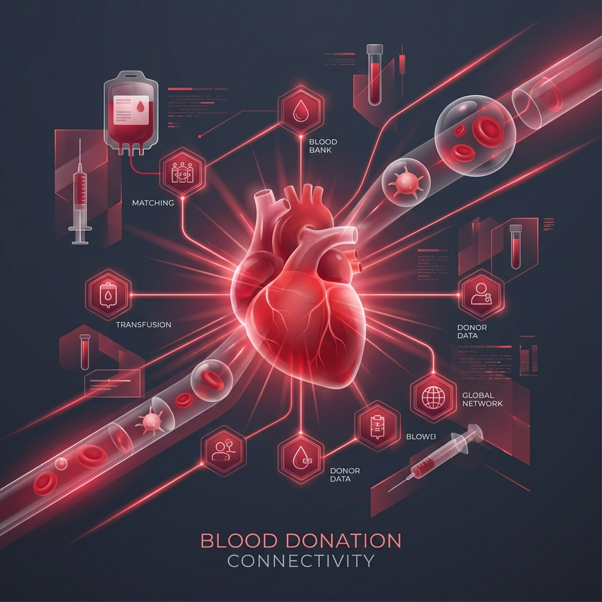

01. Button Elements
Hover and click to test micro-interactions, responsive sizing, and depth glows.
Connect blood donors with people in need through one smart platform. Save lives with instant matching and modern tracking.

Four simple steps to connect, coordinate, and complete life-saving donations.
Join our secure network by filling in your blood type and location. Be ready to volunteer or make requests instantly.
Locate nearby matching donors or scan available blood banks immediately. Post emergency alerts with one click.
Coordinate safe scheduling, check guidelines, and complete your donation process at verified clinics.
Be the reason someone gets another chance. Check updates, receive contribution badges, and inspire others.
Click on a blood group badge to highlight compatible donor and recipient groups instantly.
Universal Donor: O- blood can be given to patients of any blood type in emergencies.
Illustration demonstrating red blood cell antigen matching and antibodies flow patterns.
Discover how BloodConnect simplifies coordination, increases security, and coordinates live donations.
Sign up as a voluntary donor in under a minute. Update your medical history, availability, and donor status with ease.
Broadcast urgent match requests to compatible local donors instantly during critical emergency situations.
Pinpoint connected hospitals, blood storage facilities, and donation clinics on an interactive navigation grid.
Check live blood stock levels by blood type across medical storage centers to avoid search bottlenecks.
Receive instant alerts for nearby matching blood demands, drive updates, and donation cycle eligibility.
Protect patient profiles and contact records using advanced encryption standards and secure login workflows.
Find compatible donors within minutes. Create an alert and match instantly with local volunteers.
Real stories from medical professionals, dedicated donors, and coordinated blood banks.
Find quick answers to common questions about donor qualifications, timing, safety, and inventory.
Generally, healthy individuals between 18 and 65 years old, weighing at least 50kg (110 lbs), with no active infections or recent tattoos/piercings (within 6 months) can donate blood. Eligibility guidelines may vary, so check our detailed criteria list.
You can donate whole blood every 56 days (8 weeks) for both males and females. Platelet donations can be made every 14 days, up to 24 times a year, as your body replenishes platelets much faster than red blood cells.
Yes, blood donation is extremely safe. All needles and collection bags are sterile, used only once, and disposed of immediately after use. The process is supervised by trained medical professionals in clean, sanitized environments.
Whole blood is stored in specialized clinical refrigerators at 2°C to 6°C for up to 35-42 days. Platelets are stored at room temperature (20°C to 24°C) with continuous agitation and must be used within 5 days. Plasma is frozen and can be stored for up to a year.
Welcome to the visual foundation of the AuraBlood Management Platform. Below is the premium design guide demonstrating typography, buttons, glassmorphic cards, inputs, and section structures.
Hover and click to test micro-interactions, responsive sizing, and depth glows.
Built with multi-layer box shadows and premium backdrop blur. Hovering shifts perspective and lights up the subtle top accent bar.
Sleek input layouts featuring dynamic validation colors and search overlays.